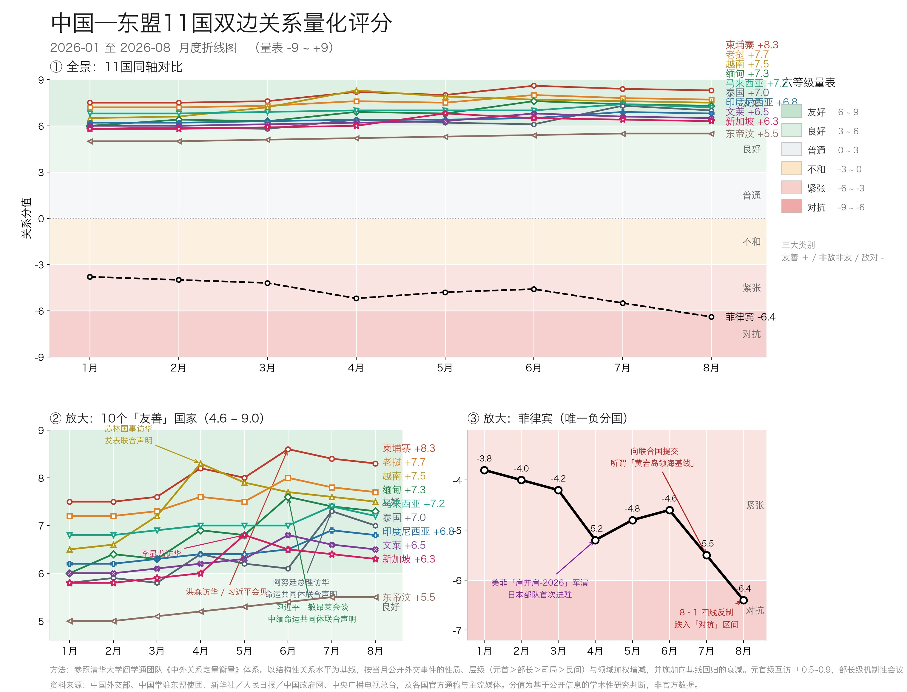
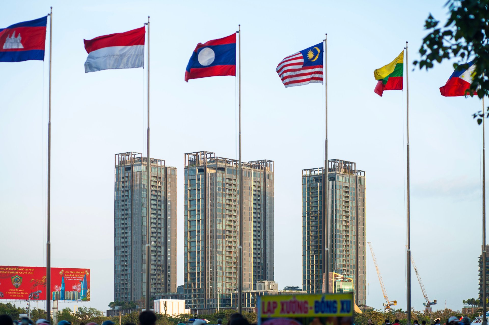

十国同处友善区间，一国滑入对抗——一份量化视角下的区域裂痕读数。
2026年前八个月，中国与东盟十一国中的十个稳定处于"良好"或"友好"区间，唯独菲律宾跌入"对抗"。这是《东南亚观察》参照清华大学阎学通团队《中外关系定量衡量》框架编制的月度指数给出的核心判断。
这套指数的思路很简单：把双边外交变成一个 −9 到 +9 的数字，每月更新。它不是官方发布的指标，而是一套完全透明、可复现的公开行为打分——峰会照片、联合声明、联合军演、外交抗议照会——全部转化为可比较的数据。结论很直接：除菲律宾外，中国—东盟关系正处于其现代史上最均匀友好的阶段。


方法改编自清华大学阎学通教授团队的《中外关系定量衡量》。核心思路是把双边关系看作一个连续变量，通过公开可查的外交行为来观测，映射到 −9 到 +9 的量表上，分成三大类六个等级：
| 大类 | 等级 | 分值范围 | 特征 |
|---|---|---|---|
| 敌对 | 对抗 | −9 至 −6 | 公开对抗、强制施压 |
| 紧张 | −6 至 −3 | 频繁摩擦、相互指责 | |
| 非敌非友 | 不和 | −3 至 0 | 净负面、低于对抗线 |
| 普通 | 0 至 +3 | 中性、交易型 | |
| 友善 | 良好 | +3 至 +6 | 合作拓展中 |
| 友好 | +6 至 +9 | 紧密、制度化 |
具体操作是"基线锚定"：以上个月分数为起点，根据当月发生的事件加减分。加减分的权重看三个维度。第一看性质——好事加分，坏事减分。第二看层级——元首或总理级别的互动（±0.5 至 ±0.9）比部长级对话（±0.2 至 ±0.5）权重高，部长级又高于司局级接触（±0.1 至 ±0.3）。第三看领域——政治互访、安全协议和重大经济签约影响最大（±0.3 至 ±0.6）；海上对峙或法律挑衅扣分最狠（−0.5 至 −1.2）。
两条硬性规则防止分数"跑偏"。一是累加封顶：同一个月里多件事可以叠加算，但净变动不超过 ±2.0，避免某个月特别忙就夸大了结构性变化。二是平稳回归：没有大事发生的月份，分数基本持平，至多小幅微调——不会因为无事发生就机械地逐月滑落，真正把分数拉回来的，是新发生的现实事件，而不是一个预设的"回落速度"。各国分值的"基本面"由两国正式定位决定——比如已经建成"命运共同体"或"全面战略伙伴关系"的，锚在友善区高位；菲律宾的基本面是负的，因为南海争端没解决，又跟美国签了共同防御条约。
三面板折线图讲了一个很清楚的故事：一个几乎全员友好的区域，唯一的例外非常刺眼。从1月到8月，十一组关系里有十组落在"友善"大类；菲律宾一条线从"紧张"一路掉进"对抗"。它和最近的友善国家新加坡（+6.3）之间差了十二个点以上——这个距离比整个"友好"区间的宽度还大。
在友善阵营内部，中南半岛五国是真正的引擎。柬埔寨、老挝、越南、缅甸、泰国全部达到"友好"级别（≥+6）。今年有三个明显的高峰。
第一个高峰在4月。越共中央总书记、国家主席苏林对中国进行国事访问。越南的分值一口气冲到 +8.3，创年内最高，双方联合声明说双边关系处于"历史最好水平"。
第二个高峰在6月。柬埔寨（洪森）、老挝（通伦）、缅甸（敏昂莱）三国领导人接连访华。柬埔寨冲到 +8.6，缅甸到 +7.6——习近平与敏昂莱大将发表了关于构建中缅命运共同体的联合声明。短短几周内，中南半岛核心圈密集完成了一次对华高层互动的"集体亮相"。
第三个高峰在7月。两件事叠加：一是中国—东盟外长会在马尼拉召开（马来西亚作为协调国与王毅共同主持），二是泰国总理阿努廷正式访华。泰国从 +6.1 跳到 +7.3，多边会议也给各国外加了一层温和的正向拉动。
海洋东盟四国——马来西亚（+7.2）、印尼（+6.8）、文莱（+6.5）、新加坡（+6.3）——也都在友善区，但有一个看不见的"天花板"。它们的曲线走势更平：印尼因为中资镍矿政策反复折腾，上升得很慢；新加坡5月份李显龙资政访华时冲到 +6.8，到了7月没有后续动作就慢慢回落了。这四个国家的共同特点是：跟中国的生意做得很大，但同时又跟美国和日本保持着安全合作。指数捕捉到的就是这种平衡——稳在友善的中高位，但很难再往上冲。
东帝汶是刚进门不久的新成员。2025年10月才成为东盟第十一国，它的分值在整个友善组里最低（+5.5），走势也很平淡。这不是因为它弱，而是因为它"太年轻"——体量小、没什么重大矛盾，所以产出的是一个稳定的低基数，而不是那种忽高忽低的波动。
菲律宾是这幅图里唯一的例外。它的线条几乎是一路向下的：从1月的 −3.8 跌到8月的 −6.4，从"紧张"跨进了"对抗"。背后有三件大事。
第一件，4月的"肩并肩2026"联合军演。超过1.7万名兵力参与，日军首次部署到菲律宾境内，美军还在吕宋岛搞了"战斧"巡航导弹试射——这对北京来说是一个强烈的信号。
第二件，7月底的一连串动作。马尼拉多次派人闯入南海礁盘，然后在7月31日向联合国提交了所谓"斯卡伯勒浅滩（即中国黄岩岛）"的基线图，同时申请350海里延伸大陆架。这一步把海上争议从双边层面抬到了国际法理层面。
第三件，中方8月1日的四线反制——外交部发表谈话驳斥、南部战区在相关海域组织演训、海警开展拦截演练、中国政府宣布将黄岩岛划为国家级自然保护区。四条线同时出手，力度和同步性都相当罕见。
值得注意的是，菲律宾今年恰好担任东盟轮值主席国。一边主持着东盟多边议程，一边跟最大伙伴正面较劲——这件事本身就在削弱马尼拉作为主席国的公信力。
这套方法论的痕迹在图上其实看得见。最明显的是新加坡和泰国：每次领导人访问之后那个峰值，如果没有后续跟进，一两个月就会小幅回落。累加上限也没有被打破——泰国7月份跳了 +1.2，已经是全表最大的单月变动，但仍然控制在 ±2.0 以内。所以这张图不只是一份事件记录，它同时也是评分规则在真实运行中的自证。
（以下为基于基线逻辑的外推推演，并非对具体事件的预测。） 按照上述逻辑，如果后面几个月不出什么大事，各国的分数会基本持平或小幅微调。常规外交活动——通常在第四季度东盟峰会前后举行的中国—东盟领导人会议，以及预计中的"2+2"机制会议和领导人后续互动——会带来一些温和的正向加分。
| 国家 | 8月 | 9月 | 10月 | 11月 | 12月 | 年末等级 |
|---|---|---|---|---|---|---|
| 柬埔寨 | +8.3 | +8.3 | +8.3 | +8.4 | +8.4 | 友好 |
| 老挝 | +7.7 | +7.6 | +7.7 | +7.8 | +7.8 | 友好 |
| 越南 | +7.5 | +7.4 | +7.5 | +7.6 | +7.6 | 友好 |
| 缅甸 | +7.3 | +7.2 | +7.3 | +7.3 | +7.2 | 友好 |
| 马来西亚 | +7.2 | +7.2 | +7.3 | +7.4 | +7.4 | 友好 |
| 泰国 | +7.0 | +6.9 | +7.0 | +7.0 | +7.1 | 友好 |
| 印度尼西亚 | +6.8 | +6.8 | +6.9 | +7.0 | +7.0 | 友好 |
| 文莱 | +6.5 | +6.6 | +6.6 | +6.6 | +6.7 | 友好 |
| 新加坡 | +6.3 | +6.3 | +6.6 | +6.4 | +6.5 | 友好 |
| 东帝汶 | +5.5 | +5.5 | +5.6 | +5.7 | +5.8 | 良好 |
| 菲律宾 | −6.4 | −6.2 | −6.0 | −5.8 | −5.6 | 对抗 |
十个友善伙伴大概率能守住各自的级别；东帝汶会从"良好"慢慢靠近"友好"的下沿；菲律宾如果能管控住局势、不再升级，可能小幅回升到 −5.6 左右，但仍然留在"对抗"区间。当然也有两种风险：万一再来一次大的海上对峙，可能跌到 −7.0；如果双方突然坐下来谈，也许能在 −6.0 附近止住跌势。但不管哪种情况，菲律宾都是2026年唯一不可能回到友善区的双边关系。
地缘政治中国—东盟 量化指数南海问题
一线两域：读懂中国—东盟裂痕
2026年的这张指数图，在一个越来越难以当作整体来看待的区域上画出了一条清晰的界线。十国聚在友善带里，菲律宾一个人掉进了对抗区。这不是测量方法造成的假象，而是关于东南亚地缘重心到底偏往哪边的实质性判断。
马尼拉在南海问题上的摇摆，折射出东盟最老的一个难题：怎么一边当联盟的轮值主席，一边把对美防御条约和对华关系这两件事摆平——而其他九国已经把后者做成了一笔结构性资产。柬埔寨、老挝、越南、缅甸、泰国能走到"友好"，不是偶然。每个国家都把自己的对华关系绑定在了一套制度安排上——命运共同体、"2+2"对话、"3+3"机制——让峰会合影变成了经得起时间考验的关系底座。
一种乐观的说法是，经济最终说了算。2025年中国—东盟双向贸易突破万亿美元，自贸区3.0升级版又锁定了未来十年的融合路径。但菲律宾恰恰是一个反例：它跟中国的贸易量并不小，分数却在一路往下掉。这说明真正起作用的变量不是贸易额本身，而是政治架构。
对东盟来说，代价是凝聚力。一个跟最大伙伴处在对抗状态的主席国，实际上是在削弱它本应维护的多边框架的权威性。这份指数因此不只是十一组双边关系的记分牌。它更像一面镜子，照出东盟当前的不对称处境——十国向内靠拢，一国外倾，而整个共同体的团结程度，恰恰体现在这条落差线上。